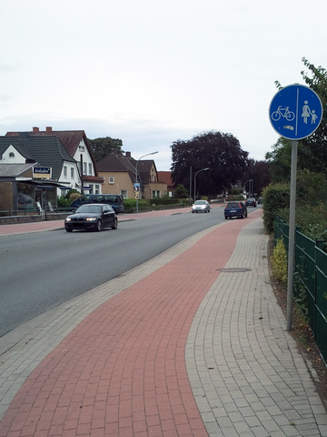
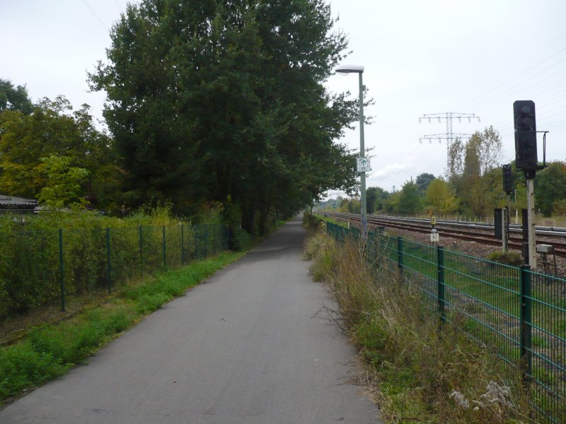
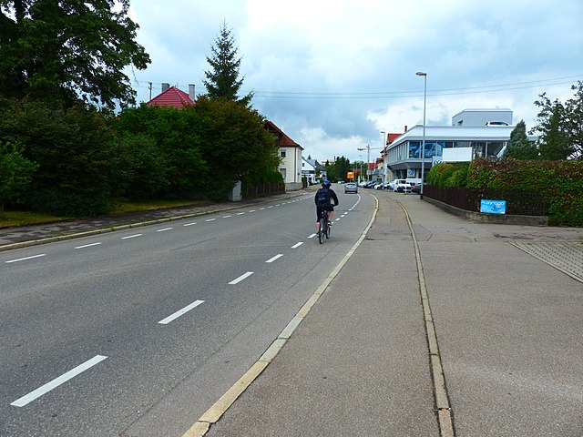

Mit dem Auto kommen Familien in der Stadt überall hin.
Und mit dem Fahrrad?
🤔 Was zeigt die Karte?
Die Karte zeigt das Berliner Straßennetz für autofreie Familien, folgende Dinge wurden dabei berücksichtigt:
-

Baulich abgesetzte Radwege neben der Fahrbahn 🎉
-

Für den Radverkehr vorgesehene Wege 👍
Foto: Thomas Wendt -

Keine Radwege auf der Fahrbahn 🙈
Foto: Ulamm, GFDL/CC BY-SA
{kind=link}
Warum diese Kombination?
Diese Kombination ist für Familien am sichersten, das sind die Familienradwege.
Kinder dürfen erst mit 10 auf der Fahrbahn fahren. Und selbst wenn sie dafür alt genug sind, gefährdet das Fahrverhalten vieler, die im Auto unterwegs sind, Kinder unnötig. Das sind zwei gute Gründe, Wege auf der Fahrbahn zu ignorieren.
Natürlich dürfen Familien auch auf Gehwegen radeln. Aber das ist ein ständiges Verhandeln mit denjenigen Menschen, für die Gehwege eigentlich gedacht sind. Und es dauert lange: An jeder Einmündung müssen alle absteigen, die Straße queren und wieder aufsteigen (§2 Abs. 5 StVO). Das ist nur für sehr kurze Wege praktikabel.
Was bringt also diese Karte?
Die Karte zeigt deutlich: Das Berliner Wegenetz ist für autofreie Familien extrem ausgedünnt.
🚧 Ganze Ortsteile sind quasi von wirklich sicheren Strecken abgeschitten. Bis auf Wege entlang der Ausfallstraßen gibt es dort praktisch keine Infrastruktur für alltägliche Wege (zur Schule, zum Einkaufen, zur Arztpraxis, zur Bibliothek). Das steht im krassen Gegensatz zu den autogerechten Strecken, die allgegenwärtig sind.
Selbst Nebenstraßen sind durch zu viele Autos eng, zugeparkt oder gepflastert und werden daher häufig gemieden.
Gerade für lange Strecken benötigen wir viel mehr Zeit als nötig, weil wir die erste und letzte Meile erst überwinden müssen – nur beim Mittelteil kommen wir Familien auf dem Rad schnell voran. Für Kurzstrecken ist die Bewegungsfreiheit im Kiez selbst stark eingeschränkt, auch wenn die Kinder radeln wollen.
Unsere Städte müssen ein autofreies Leben ermöglichen.
Kinder können ohne Eltern zur Schule kommen oder Freunde besuchen — zu Fuß oder mit dem Rad.
Das macht sie unabhängiger.
Der Flächenverbrauch von Autos in heutigen Städten ist enorm, für Straßen und für Parkplätze.
Weniger Autos bedeuten mehr Platz für Menschen.
Autobesitz ist abhängig vom Geldbeutel, arme Haushalte haben häufiger kein Auto.
Politik fürs Fahrrad ist somit Sozialpolitik.